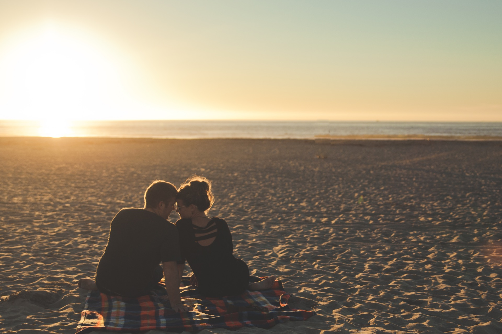

Love story. Поради для успішної організації
Кожна пара бажає зловити неймовірні миті закоханості, щирих почуттів та ніжних поглядів. А що допомагає їм зробити це якнайкраще? Звичайно ж, їхні спільні фотографії! Якщо фотографії вдалі, то переглядаючи їх, вони знову і знову повертаються до цих неповторних у своєму житті почуттів, до своєї love story.
Перш за все – Ваша впевненість. Якщо Ви випромінюєте впевненість і спокій, то це дуже допомагає моделям розслабитися та насолоджуватися зйомкою на усі 100 відсотків і, відповідно, отримати прекрасні фотографії в найромантичніших куточках України.
Пам’ятайте, що просто люди – не професійні моделі, тому не вимагайте від них неможливого. Весь процес зйомки має проходити весело та невимушено, лише так Ви доб’єтеся щирості, завдяки якій Ваша фотографія буде високо оцінена.
Щоб зйомка пройшла вдало, перед нею уточніть із парою наступні речі:
Виберіть місце для зйомки. Можливо у них є своє особливе місце, де вони познайомилися або ж часто проводять час. Таким чином, вони будуть почувати себе в звичному середовищі і зможуть розслабитися. Якщо ж вони бажають фотографуватися на якомусь відомому туристичному об’єкті чи центрі міста, то поясніть їм, що такій зйомці буде заважати велика кількість людей, які постійно потраплятимуть в кадр або ж із цікавістю спостерігатимуть за тим, що відбувається, що, в свою чергу, буде соромити пару та не дозволить їй почувати себе вільно. Проте, якщо виходу немає, тоді принаймні оберіть такий час, коли у цьому місці мінімум людей.
Попросіть пару, щоб не брала із собою лишніх речей (одягу для переодягання, косметичок і тд.). В цьому випадку Ви можете перестрахувати і себе: завжди на зйомку-прогулянку беріть із собою рюкзак. В нього Ви зможете покласти деякі речі пари, щоб під час зйомки їхні руки були вільні і звільните свої, використовуючи їх лише для фотоапарату.
Запитайте у них, чи є річ, яка їх поєднує або ж якесь хобі. Можливо, вони мають собаку чи катаються на велосипедах. Таким чином, у період адаптації до зйомки вони будуть мати чим зайнятися, тому забудуть, що їх в принципі фотографують, не будуть нервувати та Ви зможете зробити гарні кадри.
Вже під час самої зйомки, коли Ви гуляєте із парою, будьте налаштовані на те, що перших півгодини зйомки – швидше за все невдалі фото та не переймайтеся цим. Коли Ви бачите, що пара соромиться, тоді просто скажіть їм хай гуляють та насолоджуються днем. Ви ж візьміть від них дистанцію, ідіть ззаду чи збоку та фотографуйте.
При зйомці крупніших планів звертайте увагу на те, щоб рухи пари виглядали природно. Запам’ятайте, перше, на що звертає увагу глядач на фото – це очі і руки. Тому завжди звертайте увагу на те, як в кадрі виглядатимуть руки, чи природно вони лежать. Якщо ж пара не знає де подіти їх, дайте їм щось, щоб зайняти руки – іграшку, квітку, цукерку. А ще завжди старайтеся говорити з парою, жартувати, щоб вони не думали про те, що їх знімають, як вони виглядають, не поправляли речі, а просто щиро сміялися, бо повірте, якщо на фотографії видні щирі справжні емоції – це фото в будь-якому випадку буде виглядати прекрасно.